杜 一
我目前就职于中国科学院计算机网络信息中心大数据技术与应用发展部，副研究员，硕士生导师。博士毕业于中国科学院软件研究所，曾赴普渡大学 VACCINE 实验室交流访问。主要研究兴趣在大规模时空数据可视分析、图数据挖掘（知识图谱）、人机交互技术等。截至目前，我主持及参与包括国家重点研发计划、国家自然科学基金项目、中国科学院科技创新工程在内的项目十余项，在国内外知名期刊会议发表论文三十余篇，申请专利及软件权十余项，其中一项成果完成成果转移转化。主导及参与的大数据项目，为国家自然科学基金委、北京铜牛集团、伊利集团、中国气象局、中科院数学所、心理所等企事业单位提供服务。
| 教育&工作背景 | |
| 2015年12月 - 今 | 中国科学院计算机网络信息中心，大数据技术与应用发展部副研究员、硕士研究生导师
研究方向: 时空数据可视分析、数据挖掘 |
| 2015年9月 - 2016年9月 | 普渡大学可视分析实验室(VACCINE)访问学者
研究方向: 信息可视化，可视分析 合作导师: David Ebert |
| 2013年7月 - 2015年12月 | 中国科学院计算机网络信息中心，科学数据中心助理研究员
研究方向: 信息可视化, 人机交互 |
| 2008年9月 - 2013年7月 | 中国科学院软件研究所人机交互技术与智能信息处理实验室博士
E-UIDL: 一种移动计算环境下的用户界面描述语言 指导老师: 戴国忠 答辩委员: 华庆一, 史元春, 汪国平, 王志良, 山世光 |
| 2004年9月 - 2008年7月 | 山东大学软件学院本科（3/208）
笔式图形编辑框架的研究与应用 （山东大学优秀毕业论文） 指导老师: 闫中敏, 滕东兴 |
| 项目 | |
| 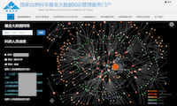 | 国家自然科学基金知识大数据管理服务平台 (2017年1月至2018年3月)
从国家自然科学基金委（NSFC）长期积累的相关数据出发，构建大数据管理平台，提供多维、网络分析与挖掘功能，实现高效的多维统计及知识挖掘。以“项目－成果－人员”为核心，构建了由近两千万实体及上亿条关系的知识网络。 技术:Hadoop, Ambari, Neo4J, GraphX, Apache Nifi, Apache Kylin 演示:截图(架构简图) |
| 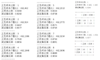 | 航道大数据报警优化 (2016年10月－2017年1月)
针对航标数据传统基于规则的报警方法效率较低的问题，给出结合传统机器学习方法与领域知识的二次报警优化系统。 技术:Python、随机森林 演示:TBD |
| 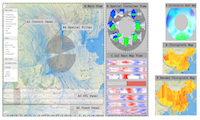 | 空气污染相关性可视分析系统
基于空气污染每小时监测数据及气象数据，设计可视分析系统。该系统帮助分析师快速定位和发现异常，并通过新的可视化方法，判断空气污染发生在时间与空间上的相关性，从而辅助分析师或领域专家提出可能的科学假设。 技术:Javascript, D3.js 论文及演示:截图 |
| 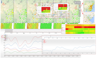 | 空气质量可视分析系统
针对全国空气质量检测总站每小时监测数据设计并实现可视分析系统，系统结合了趋势图、地图、日历图等可视化方法，并针对长时间序列在呈现效率及精度上存在的问题，借鉴编程语言的日期处置方法，给出一种自适应趋势图呈现方法. 技术:Javascript, D3.js 论文及演示:论文 |
| 数据可视化平台(DVIZ)
类似ManyEyes的数据可视化平台，引入了可视化项目的概念，支持九种不同的数据类型、五种布局类型、十一种可视化呈现方式，以及对可视化图形之间关联的支持. 技术:Java, ECharts, D3.js 论文及演示:在线系统 截图 结果 影响力 视频 |
|
| 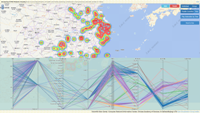 | H7N9 可视分析系统
对2013年至今的禽流感数据进行可视化.该项目通过Google Map及Heatmap.js实现病例的个体分布与区域分布的可视化，通过基于D3.js的平行坐标实现可视化的数据过滤与分析. 技术:Java, D3.js 论文及演示: 在线系统 截图 论文1 论文2 |
| 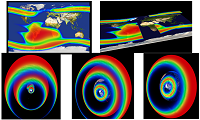 | 抗辐射轨道卫星演示系统
针对空间辐射数据集轨道数据，使用World Wind Java SDK开发可视化系统.系统通过二维与三维视图结合，以及区域填充图等方式对卫星轨道及相关辐射带进行可视化. 技术:Java, WorldWind Java SDK 论文及演示:截图1 截图2 截图3 演示 |
| 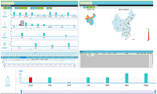 | 食品质量可视分析系统
对某公司500余类食品的抽检数据进行可视化.该系统使用ECharts的地图、趋势图等方式，结合不同的交互逻辑的设计，实现对检测质量的可视分析. 技术:Java, ECharts, MongoDB 论文及演示: |
| 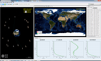 | 轨道数据可视化系统
针对32颗气象卫星的轨道数据及卫星相互关系产生的事件数据，使用World Wind Java SDK开发轨道可视化系统. 技术:Java, WorldWind Java SDK 论文及演示:截图1 截图2 截图3 截图4 |
| 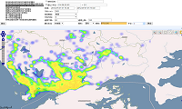 | 出租车GPS数据处理与可视化系统
对100亿条出租车GPS数据进行处理及可视化.通过对数据进行合理分割、使用分片机制搭建MongoDB集群、后台搭建并行的R处理环境等方式提高数据的检索性能，前端使用OpenLayers进行基于地图的数据呈现. 技术:Java, MongoDB, OpenLayers 论文及演示:截图1 截图2 截图3 论文 |
| 移动环境下用户界面描述语言的研究
该项目设计一种模块化、可扩展的用户界面描述语言；并提出基于该描述语言的用户界面生成框架及相关的界面生成算法.界面设计及生成使用基于Eclipse的RCP开发，生成C语言与Java语言代码. 技术:Java, C 论文及演示:设计工具截图1 设计工具截图2 生成工具截图1 生成工具截图2 生成工具截图3 生成工具截图4 |
|
| 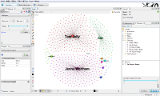 | Gephi社会网络数据导入插件
Gephi是一个图可视化软件，使用Java语言编写，能够实现图的导入、呈现、导出等基本操作，还包括图布局算法、图节点聚类算法、统计算法等. 技术:Java, Netbeans 论文及演示:截图1 截图2 截图3 |
| 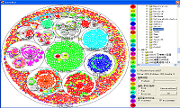 | 基于嵌套圆的文件管理系统
Desc. 技术:C++,OpenGL 论文及演示:演示 论文 |
| 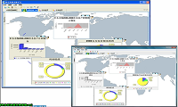 | 基于Daisy的工厂生产流程可视分析系统
TODO 技术:Java, RCP, Prefuse 论文及演示: 演示 论文 |
| 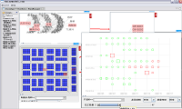 | Daisy
一款可视分析工具箱，实现了数据的提取、数据的展示、以及数据的分析功能.已成功应用于某两家服装生产工厂及一家地理信息系统公司. 技术:Java, RCP, Prefuse 论文及演示: 演示 论文 |
{kind=link}
{kind=link}
{kind=link}
{kind=link}
{kind=link}
{kind=link}
{kind=link}
{kind=link}
{kind=link}
{kind=link}
{kind=link}
{kind=link}
{kind=link}
{kind=link}
{kind=link}
{kind=link}
{kind=link}
{kind=link}
{kind=link}
{kind=link}
{kind=link}
{kind=link}
{kind=link}
{kind=link}
{kind=link}
{kind=link}
{kind=link}
{kind=link}
{kind=link}
{kind=link}
{kind=link}
{kind=link}
{kind=link}
{kind=link}
{kind=link}
{kind=link}
{kind=link}
{kind=link}
| 科研项目 | |
| 面向领域大数据的知识图谱构建. 国家自然科学基金重点项目 (项目参与人,2019-2023) | |
| 食源性疾病监测、溯源与预警技术研究(基于多源数据的食源性疾病实时预警技术体系研究). 国家重点研发计划 (课题负责人,2018-2021) | |
| 基于Overview＋Detail的交互式时空数据可视化方法研究. 中国科学院知识创新工程 (项目负责人,2015-2016) | |
| 模型驱动的大规模时空数据可视化开发方法研究. 国家自然科学基金青年项目 (项目负责人,2015-2017) | |
| 城市综合评价技术研发与应用. 中国科学院科技服务网络计划（STS）(项目参与人,2015-2017) | |
| 领域云系统虚拟管理技术与虚拟管理系统（高寒环境联合监测研究云的建设与应用子课题）. 中国科学院科研信息化项目(项目参与人,2013-2015) | |
| 面向非常规突发事件应急管理的大数据时空可视化服务研究. 国家自然科学基金重大研究计划培育项目 (项目参与人,2014-2015) | |
| 基于真实隐喻的儿童交互式学习环境研究. 国家自然科学基金青年项目 (项目参与人) | |
| 图文混合笔输入文档分析与识别的理论与方法研究. 国家自然科学基金面上项目 (项目参与人) | |
| 基于设备属性融合的人机交互技术研究. 国家自然科学基金海外及港澳学者合作研究基金 (项目参与人) | |
| 面向多设备的个人信息管理的研究. 国家自然科学基金青年项目 (项目参与人) | |
| 面向视频语义描述与交互的草图界面关键技术研究. 国家自然科学基金面上项目 (项目参与人) | |
| Reality-based Interaction用户界面模型和评估方法研究. 国家自然科学基金面上项目 (项目参与人) | |
| 基于手写设备的在线笔迹智能理解和交互技术研究. 国家自然科学基金青年项目 (项目参与人) |
| 论文 | |
| 期刊论文 |
Yi Du, Jia Li, Yuanchun Zhou Controlled Experiment of Banded Choropleth Map, HHME?,2018 (Accepted). 范俊君, 戴国忠, 杜一, 刘正捷, 田丰, 智能时代人机交互的一些思考, 中国科学(信息科学),2018. Yi Du, Abish Malik, Lianke Zhou, Yuanchun Zhou, A Correlation Visual Analytics System for Air Quality, Chinese Journal of Electronics,2018. (SCI)(Accepted) Yi Du, Lei Ren, Yuanchun Zhou, Jianhui Li, Feng Tian, Guozhong Dai, Banded Choropleth Map, Personal and Ubiquitous Computing,2017. (SCI) 吕菲, 田丰, 杜一, 陈凯翔, 侯文君, 戴国忠, 基于真实感层级框架的自然用户界面评估方法研究, 计算机辅助设计与图形学学报,2017,29(11):2076-2082. Lei Ren, Yongchang Wei, Jin Cui, Yi Du, A Sliding Window based Multi-stage Clustering and Probabilistic Forecasting Approach for Large Multivariate Time Series Data, Journal of Statistical Computation and Simulation (GSCS),2017. (SCI) Wenjuan Cui, Pengfei Wang, Xin Chen, Yi Du, Danhuai Guo, Yuanchun Zhou, Jianhui Li, An Algorithm for Event Detection Based on Social Media Data, Neurocomputing,2017. (SCI) Yi Du, Cuixia Ma, Chao Wu, Xiaowei Xu, Yike Guo, Yuanchun Zhou, Jianhui Li, A Visual Analytics Approach for Station-based Air Quality Data, Sensors (Big Data and Cloud Computing for Sensor Networks),17(1), 30, 2017. (SCI) 徐晓伟, 杜一, 周园春, 基于多源出行数据的居民行为模式分析方法, 计算机应用, 2017, 37(8): 2362-2367. 杜一, 郭旦怀, 陈昕, 任磊, 戴国忠, 一种模型驱动的可视化生成系统, 软件学报,27(5), pp. 1199-1211, 2016. 杜一, 田丰, 戴国忠, E-UIDL用户界面描述语言下的开发方法, 软件学报, 26(7), pp. 1772-1784, 2015. 杜一, 郭旦怀, 周园春, 黎建辉, 一种大规模时空数据处理与可视化框架, 计算机研究与发展, 51(s2), pp. 10-17, 2015. 任磊, 魏永长, 杜一, 戴国忠, 面向小界面大数据可视化的语义Focus+Context人机交互技术, 计算机学报, 38(12), pp. 2488-2498, 2015. 任磊, 杜一, 马帅, 张小龙, 大数据可视分析综述, 软件学报, 25(19), pp. 1909-1936, 2014. 杜一, 田丰, 马翠霞, 戴国忠, 基于多尺度描述方法的移动用户界面生成框架, 计算机学报. 36(11), pp. 2179-2190, 2013. 杜一, 任磊, DaisyVA:支持信息多面体可视分析的智能交互式可视化平台, 计算机辅助设计与图形学学报, 25(8), pp. 1177-1182, 2013. 杜一, 邓昌智, 田丰, 戴国忠, 一种可扩展的用户界面描述语言, 软件学报, 24(5), pp. 1127-1142, 2013. 杜一, 吕菲, 田丰, 侯文君, 马翠霞, 戴国忠, 一种支持超视频创建与可视呈现的草图界面技术, 软件学报, 24(s2), pp. 32-41, 2013. 杜一, 田丰, 王锋, 戴国忠, 王宏安, 一种移动环境下的用户模型, 软件学报, 22(s1), pp. 120-128, 2011. Yi Du, Cuixia Ma, Dongxing Teng,Guozhong Dai, CONCEPT-SKETCH: A Tool for Cooperative Visual Analytics, International Journal of Advanced Intelligence (IJAI), vol. 3, no. 1, pp. 95-113, 2011. |
| 会议论文／海报张贴 |
Wenjuan Cui, Yi Du, Zhihong Shen, Yuanchun Zhou, Jianhui Li. (2017) Personalized Microblog Recommendation Using Sentimental Features. IEEE International Conference on Big Data and Smart Computing (IEEE BigComp 2017). Fei Lyu, Lei Ren, Yi Du (2017) An Optimization Method for User Interface Components Based on Big Data. In: Zhang L., Ren L., Kordon F. (eds) Challenges and Opportunity with Big Data. Monterey Workshop 2016. Lecture Notes in Computer Science, vol 10228. Springer, Cham Yi Du, Lei Ren, Yuanchun Zhou, Jiahui Li(2017) A Model-Driven Visualization System Based on DVDL. In: Zhang L., Ren L., Kordon F. (eds) Challenges and Opportunity with Big Data. Monterey Workshop 2016. Lecture Notes in Computer Science, vol 10228. Springer, Cham Wenjuan Cui, Pengfei Wang, Xin Chen, Yi Du, Danhuai Guo, Yuanchun Zhou, Jianhui Li, How to Use the Social Media Data in Assisting Restaurant Recommendation. In H. Gao, J. Kim & Y. Sakurai (Eds.), Database Systems for Advanced Applications: DASFAA 2016 International Workshops: BDMS, BDQM, MoI, and SeCoP, Dallas, TX, USA, April 16-19, 2016, Proceedings (pp. 134-141). Cham: Springer International Publishing. Yi Du, Qianyu Liu, Yuanchun Zhou, Jianhui Li, DVIZ: A Model-driven Visualization Generation System (Poster), in IEEE Symposium on Visual Analytics Science and Technology (VAST) 2015, Chicago, USA, 2015. preview Danhuai Guo, Yi Du,A Visualization Platform for Spario-Temporal Data: a Data Intensive Computation Framework, in the 23rd International conference on Geoinformatics 2015, Wuhan, China, 2015. Lei Ren,Yi Du, A Sketch+Fisheye Interface for Visual Analytics of Large Time-Series (Poster), in IEEE Symposium on Visual Analytics Science and Technology (VAST) 2014, Paris, France, 2014, pp. 265-266. Lei Ren, Jin Cui, Yi Du,Guozhong Dai, Multilevel Interaction Model For Hierarchical Tasks In Information Visualization, in The 6th International Symposium on Visual Information Communication and Interaction (VINCI 2013) Tianjin, China, 2013, pp. 11-16. （EI） Yingying Jiang, Feng Tian, Guang Li, Xiaolong (Luke) Zhang, Yi Du, Guozhong Dai,Hongan Wang, SpeechTouch: Precise Cursor Positioning on Touch Screen Mobiles, in 15th International Conference on Human-Computer Interaction with Mobile Devices and Services (MobileHCI 2013), Munich, 2013.（EI） Yi Du, Cuixia Ma, Dongxing Teng,Guozhong Dai, Cooperative Concept Map Based on Cognitive Model for Visual Analysis, in The 3rd Visual Information Communication - International Symposium (VINCI 2010), Beijing, China, 2010, pp. 76-83.（EI） Cuixia Ma, Yi Du, Dongxing Teng, Jia Chen, Hongan Wang, Guozhong Dai, An Adaptive Sketching User Interface for Education System in Virtual Reality, in Proceedings 2009 IEEE International Symposium on IT in Medicine and Education (ITME 2009), Jinan, China, 2009, pp. 796-802.（EI） |
| 学位论文 |
杜一, E-UIDL: collaborator, 博士学位论文, 中国科学院, 中国, 2013 杜一, 笔式图形编辑框架的研究与应用, 学士学位论文, 山东大学, 中国, 2008. |
| 专利 |
中国专利：一种支持时序特征探查的统计地图绘制方法. 完成人： 杜一, 周园春, 黎建辉. 申请号：201610753059.7 中国专利：一种时空延迟相关性可视化方法. 完成人： 杜一, 周园春, 黎建辉. 申请号：201610694753.6 中国专利：一种基于主题流的时空延迟相关性可视化方法. 完成人： 杜一, 周园春, 黎建辉. 申请号：201610640243.0 中国专利：一种基于气象数据的监测指标时空延迟相关性计算方法. 完成人： 杜一, 崔文娟, 周园春, 黎建辉. 申请号：2016104650296 中国专利：一种基于时序相关性的空间聚类方法. 完成人： 杜一, 崔文娟, 吕菲, 周园春, 黎建辉.申请号： 201610404636.1 中国专利：一种基于访问热度的时空数据服务调度方法. 完成人： 郭旦怀, 杜一, 周园春, 黎建辉. 申请号：2014108485284 中国专利：一种基于WEB的多模型数据可视化开发方法及平台.(已授权) 完成人：杜一, 郭旦怀, 周园春, 黎建辉. 申请号：2014108493971 中国专利：一种交互式空间场景检索方法. (已授权) 完成人： 郭旦怀, 杜一, 周园春, 黎建辉. 申请号：201310682924X |
| 软件著作权 |
空气污染相关性分析系统. 登记号：2017SR465715 流行性疾病时空可视分析系统. 登记号：2015SRBJ0246 基于出租车数据的在线可视化系统.登记号：2015SRBJ0205 基于经纬高数据的卫星可视化系统. 登记号：2014SRBJ0295 |
| 图书章节 |
刘勇,杜一, 网络数据可视化与分析利器:Gephi中文教程. 电子工业出版社, 2017. 戴国忠,田丰, 笔式用户界面 (第二版). 中国科技大学出版社, 2014. 第6章、第7章. |
| 社会兼职 |
中国医药质量管理协会临床试验及大数据质量管理分会委员 中国计算机学会(CCF)人机交互专业委员会委员 中华医学会消化内镜学分会大数据协作组委员 中国图象图形学学会(CSIG)可视化与可视分析专委会委员 中国互联网协会青年专家 山东省青年创新人才协会首届会员、理事 CCF 会员、ACM 会员、ACM SIGCHI CHINA Chapter 会员 ISMC 2016 （The 2016 International Simulation Multi-Conference） PC member 第二十八届冯如杯学生学术科技作品竞赛 评审专家 ChinaVis 2016,2018 数据可视分析挑战赛 评审专家 Gephi开放研究网络成员  IBM 认证专家 (DB2数据库管理员, XML技术) |
| 社会活动 |
大数据分析与挖掘在医学研究中的应用,中国消化内镜学年会,大数据临床研究及人工智能联合会场报告,2018 大数据支持的农业科技评价,第二十四届中国计算机农业应用学术研讨会暨智慧牧场论坛,青年学术论坛报告,2018 多源数据融合管理-以基金委大数据为例,中国科学数据大会，分会报告,2018 大数据处理技术与应用,面向科研院所和高校科研人员的第四科研范式下的大数据与云计算技术高级研修班,专题报告,2018 大数据分析挖掘概述及其在医学研究中的应用示例,中国医药质量管理协会临床试验及大数据质量管理分会2018年度中期会议,专题报告,2018 |